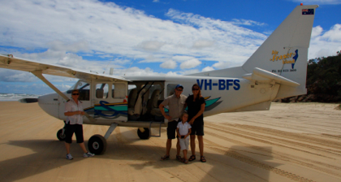

Fraser Island

7 timers rutsjebanetur
lørdag den 12. januar 2008

Kl. 8.00 er der afgang med med store 4 hjulstrukne busser på 8 timers tur til Fraser Islands attraktioner, nej vi skal endelig ikke kede os. Mor og Per bliver hjemme med Stella, så vi er 3 afsted. Vejene på øen er mildt sagt temmelig ujævne, så det bliver en rigtig sjov tur med masser ryst og hop.
Første stop er Lake Mckenzie, en stor ferskvandssø, hvor vi vasker hår og børster tænder med det fineste sand. Vi er utrolig heldige, det er den første dag med godt vejr i over 3 uger, hvilket betyder at vi kan nyde søens flotte blå farve på en dejlig svømmetur.
Andet stop er Central Station, en smuk regnskov, hvor der løber et glasklart vandløb langs vores vandrerute. Vi får set den lille blå Kingfisher fugl, en kæmpe edderkop og nogle træer, der er mellem 600 og 700 år gamle.
Tredie stop er frokost, hvor vi spiser sammen med ca. 200 andre turister, som vi heldigvis ikke har mødt på vores tur.
Fjerde stop er resterne af damperen Maheno, der gik mellem Sydney og New Zealand. Et hurtigt skib, der blev brugt som hospitalsskib under 1. verdenskrig. Det blev solgt til nogle japanere, der fragtede hende og et andet skib til Japan. De fjernede skibets propeller, bandt skibet sammen med et andet og sejlede op langs kysten. Desværre kom der en cyklon uden for sæsonen, så rebene bristede og skibet drev rundt i 3 dage inden det gik på grund ved Fraser Island.
På stranden ved vraget, kan man flyve en lille tur ind over øen. Der er kun et par steder i verden, hvor man kan lette og lande på en strand, så det skal vi selvfølgelig prøve. Sandalerne bliver børstet af, vi lukker sikkerhedsselen, og så er det ellers afsted hen over sandet og ud over vandet. Vi har været vant til meget grundige sikkerhedsbrief i Australien, så vi er lidt overraskede over, at der ingen er på flyveturen. Turen er kort, men flot. Vi kan se hele 75 mile stranden fra flyet, og Viola får taget en masse billeder.
Man må ikke bade ved stranden, da der jævnligt bliver observeret Tiger hajer 15 meter fra kysten. Vi bader i stedet ved Eli Creek, hvor Viola kravler med strømmen ned af floden.
Sidste stop er ved en af øens vandreklitter. Der kan vi se nogle træstammer, der er kommet fri af sandet. Stammerne er ret velholdte, da de ikke er angrebet af de normale svampe, der får træ til at rådne. Man kan derfor heller ikke sige om det er 100 eller 1000 år siden at skoven er blevet dækket af sand.
Vi kører 40 hoppende minutter tilbage til hotellet, på vejen ser vi en Dingo. Fraser Island har de mest rene Dingoer i Australien, da de ikke er blevet blandet sammen med hunde.
Hjemme spiser vi og går tidligt i seng. Dagen efter kan vi hygge ved poolen inden afrejse til Brisbane.
Det var en ret speciel oplevelse at lette og lande direkte på stranden. Men en god måde lige at få set Fraser Island fra oven.